WeatherFlow
背景
- 任务背景： 真实天气迁移要求整体大气、照明和表面风格保持一致，同时让道路、车辆、行人、植被等区域产生符合类别的局部响应，例如湿路反射、积雪覆盖、冬季衣着和深度相关的雾衰减。
- 技术背景： DiT/Rectified-Flow 编辑器可以用自然语言完成单图编辑，但一条全局天气指令通常只能建立统一风格，难以描述每个类别的物理响应。直接加入多条局部语义指令又会让不同条件同时驱动同一采样状态，产生欠编辑、语义泄漏、幻觉或结构漂移。
- 方法定位： WeatherFlow 是一个零样本、免训练的单图天气编辑框架。它不依赖人工掩码或外部分割器，而是从预训练编辑器内部追踪局部语义响应与全局天气轨迹的冲突，并在采样早期进行隐状态级和速度级的投影校正。
问题：Semantic–Style Velocity Conflict
全局天气指令希望整幅图沿统一的大气、照明与表面风格方向演化；车辆、行人、植被等局部指令则产生不同的语义速度。当它们在相同 latent 区域上的方向不兼容时，会出现：
- 局部天气响应过弱，目标区域几乎不变化；
- 属性或语义泄漏到背景及相邻物体；
- 物体数量、身份、姿态或结构被错误改写；
- 道路、建筑边界或场景布局漂移。
WeatherFlow 将这种局部语义速度与全局天气风格速度的不一致定义为 Semantic–Style Velocity Conflict（SSVC，语义—风格速度冲突）。
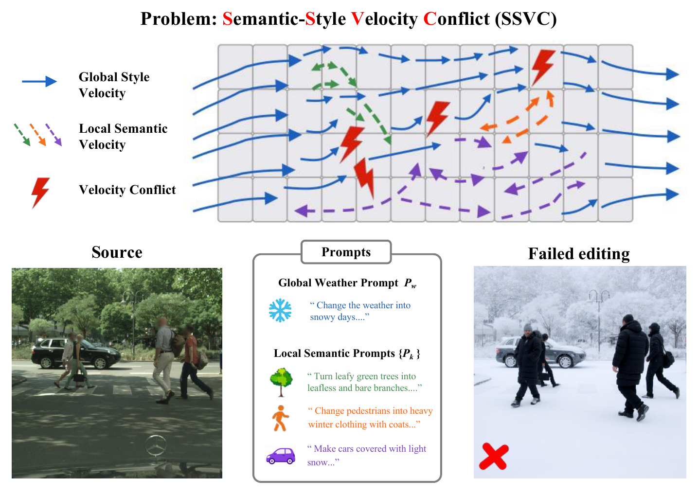
Insight
- 局部语义响应本身不是噪声。 雪覆盖、湿路反射、冬季衣着等变化是天气编辑所必需的。关键不是整体压制局部分支，而是识别其中与全局天气载体不兼容的分量。
- 冲突同时提供空间定位信号。 类别 token 的注意力说明“语义可能在哪里”，局部—全局注意力差说明“哪里尚未被全局天气解释”，速度差说明“哪里在动力学上真正分歧”。三者结合即可定位需要干预的区域。
- 借鉴流体求解器的投影—校正原则。 方法不照搬不可压缩流体方程，而是采用其计算思想：先得到包含有用局部响应的暂定速度，再校正违反全局天气约束的分量，最后推进主状态。
- 冲突应尽早解决。 早期步骤决定语义分配、物体级偏移和主要运输方向；后期主要细化色调、纹理、光照与大气效果。一旦冲突形成，晚期干预很难逆转结构漂移。
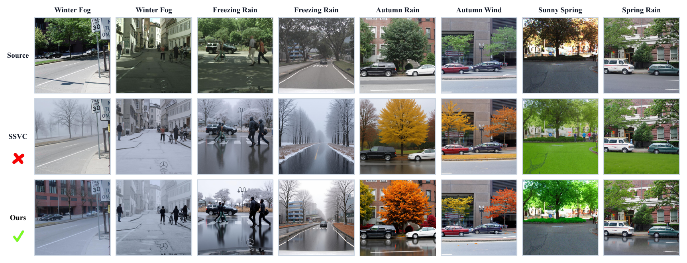
方法
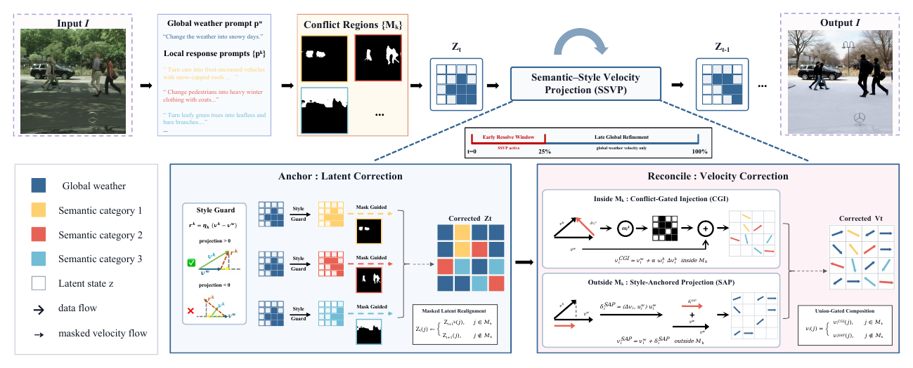
WeatherFlow 由自动局部提示词构建、Conflict Region Tracing 和 Semantic–Style Velocity Projection（SSVP）组成。
1. 自动局部提示词与输入协议
- 目标天气来自固定的六类基准：沙尘、雾、阴天、雨、雪和风暴。
- GPT-5.5 针对道路、植被、车辆、行人、建筑/屋顶、交通设施、天空/远景等固定类别，为每种天气生成一次局部响应提示词库。
- 元提示要求天气响应物理合理，同时明确保留物体身份、数量、姿态、位置和几何，不得插入或删除无关物体。
- 每个天气的提示词库在推理前冻结，并对所有图像复用，不进行逐图人工改写。
- 为排除“只是增加了提示词内容”的影响，论文设置文本匹配对照：把相同局部提示词与全局指令拼接后交给标准单提示接口。
2. Conflict Region Tracing：冲突区域追踪
WeatherFlow 从 FLUX.1 Kontext 的联合文本—图像注意力中提取三类信号：
- 语义注意力 ： 类别 token 对图像 token 的响应，指出局部类别的空间支持。
- 语义—风格注意力差 ： ，抑制已经被全局天气注意力解释的部分。
- 速度冲突 ： ，度量局部速度偏离全局天气载体的程度。
归一化后三者以 加权。模型从一个 10 步早期探测轨迹中汇聚第 4–7 步，并用低空间熵优先的权重强调集中、可靠的冲突响应；随后通过特征亲和传播、阈值化和固定形态学清理获得冲突掩码。多个区域重叠时，每个 token 归给得分最高的区域，使局部分支互斥。
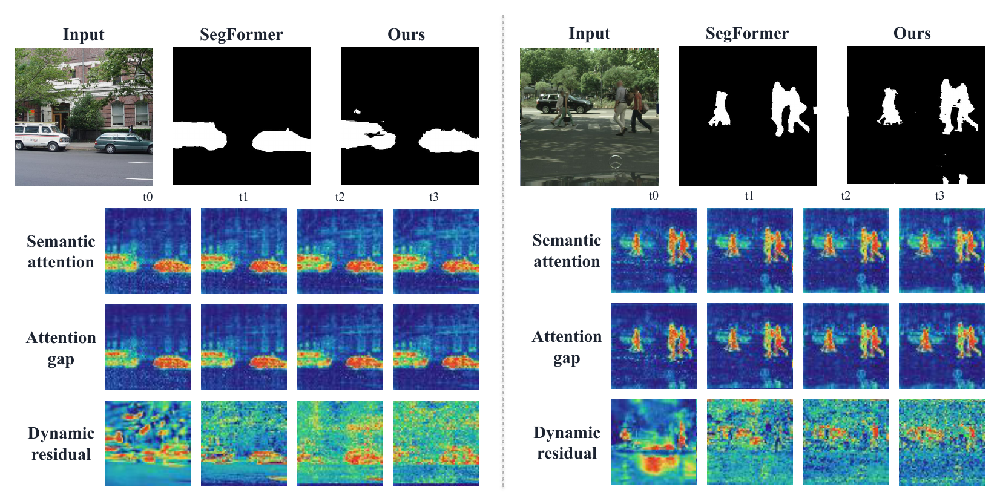
这里得到的不是完整闭集语义分割，而是某个语义区域中真正与全局轨迹发生分歧的子集。掩码在早期步骤上汇聚证据后固定，并只用于限定 SSVP 可以注入局部响应的位置。
3. SSVP-Anchor：隐状态级校正
Anchor 为主天气轨迹维护隐状态 ，同时为每个局部类别维护响应状态 。在默认早期窗口 内：
- 局部分支相对全局速度产生暂定残差，并通过以全局速度方向为边界的半空间守卫，削弱明显反向的分量。
- 局部状态只允许在冲突掩码内累计类别响应；每一步之后，掩码外 token 都被重新对齐到当前主天气状态。
- 主状态不会被局部分支直接覆盖，它只由下一阶段校正后的最终速度推进。
Anchor 解决的是“从什么隐状态计算局部响应”的问题，防止局部分支在进入主轨迹之前各自漂移。
4. SSVP-Reconcile：速度级校正
Reconcile 决定局部响应怎样进入真正推进主 ODE 的速度：
- 冲突区域内： 允许局部残差进入，但使用局部—全局速度差生成软门控，在全局速度与守卫后的局部速度之间插值。
- 冲突区域外： 将聚合残差投影到全局天气速度的一维方向上，局部提示只能调整全局载体的幅度，不能引入独立的背景方向。
- 联合组合： 以所有冲突掩码的并集切换“区域内局部注入”和“区域外全局方向投影”，得到最终主速度。
前 6 个步骤完成 Anchor 与 Reconcile 两级校正后，剩余步骤关闭局部分支，回到纯全局天气轨迹完成纹理、色调与大气收敛。
实验
1. 实验设置
- 数据： 从 BDD100K、Cityscapes 和 STREET-6K 固定抽取 100 张源图，对每张图应用沙尘、雾、阴天、雨、雪、风暴六类条件，每种方法共生成 600 个源图—天气对。
- 模型配置： FLUX.1 Kontext，28 个采样步，guidance scale 2.8，随机种子 42；默认 SSVP 窗口为前 6 步。核心参数为 、、、。
- 主指标： EditScore 的 Semantic Consistency（SC）、Perceptual Quality（PQ）与 Overall；EditReward 的平均奖励、成对偏好率和平均边际；另进行盲测用户研究。
- 诊断指标： SSIM、LPIPS、CLIP 和 PickScore 只用于判断欠编辑或过编辑倾向，不参与主排名，因为高源图相似度可能奖励“几乎没改”的结果。
2. 冲突定位是否可靠
SegFormer 仅作为评估时的伪参考，不参与 WeatherFlow 推理：
表 1：冲突区域与 SegFormer 伪参考掩码的重叠
| 类别 | Mean IoU ↑ | Mean Dice ↑ | Precision ↑ | Recall ↑ |
|---|---|---|---|---|
| 行人 | 0.5881 | 0.7353 | 0.7355 | 0.7664 |
| 植被 | 0.4338 | 0.5752 | 0.5348 | 0.8599 |
| 车辆 | 0.4216 | 0.5389 | 0.5427 | 0.7545 |
行人区域的整体重叠最高；植被召回率高，符合天气敏感区域“漏掉比适度扩张更危险”的特点；车辆波动更大，因为并非每种天气都要求车辆产生同样强的局部响应。
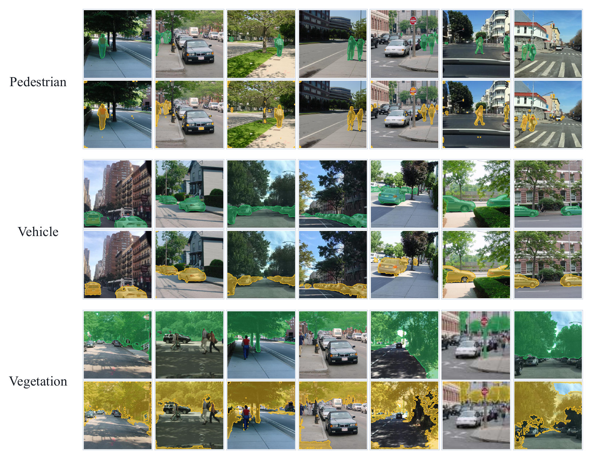
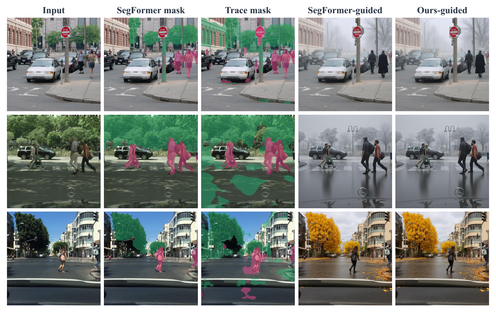
用 SegFormer 伪参考掩码替换自动追踪掩码后，示例中的雾、雨和季节变化结果定性相近。该现象支持“定位冲突子区域即可”，但不构成两种掩码在统计意义上等价的结论。
3. 两级投影组件消融
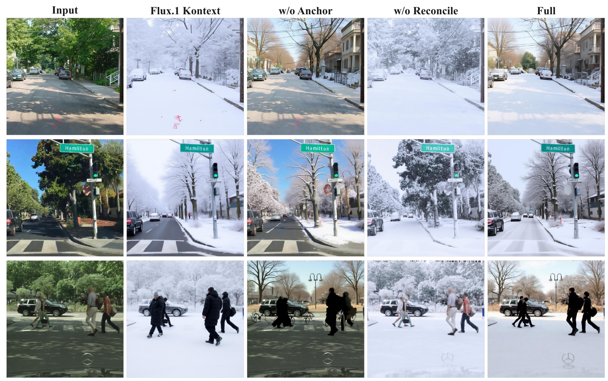
- 移除 Anchor 后，局部区域仍可编辑，但局部响应状态不再反复对齐共享天气轨迹，导致全局天气一致性下降；EditScore Overall 从完整模型的 7.773 降至 7.583。
- 移除 Reconcile 后，全局外观仍较连贯，但局部响应无法有效进入主更新速度，沿主轨迹逐渐衰减；Overall 降至 7.411。
- 完整模型同时校正隐状态和更新速度，说明两阶段作用不同且互补。对应的完整 SC、PQ 和 Overall 数值保留在论文主比较表中。
4. 为什么只在早期干预
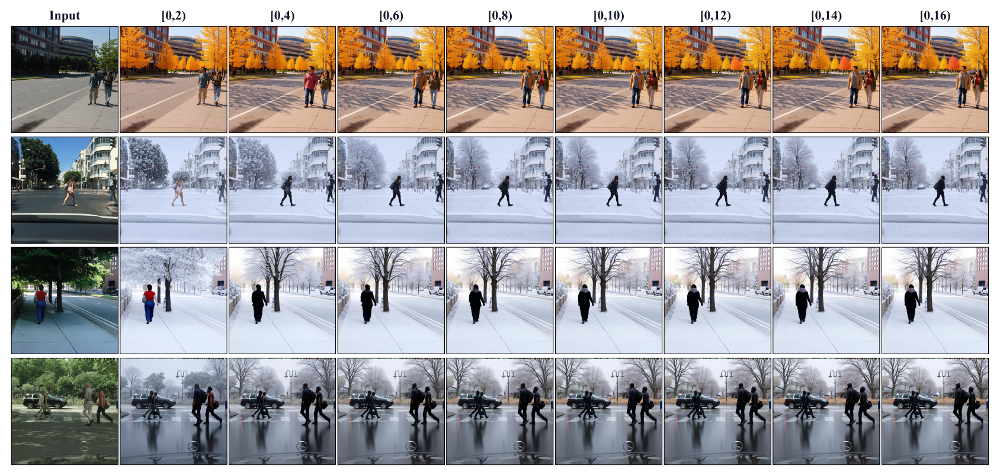
窗口过短时，局部天气响应不完整；结果在 左右趋于稳定，继续延长到 8–16 步只有轻微视觉变化。
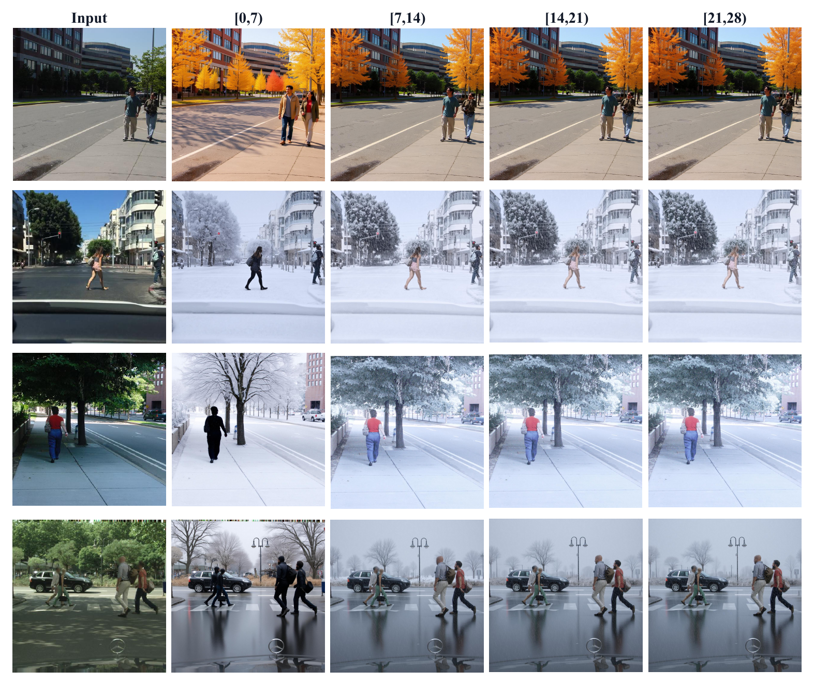
在 28 步轨迹中，把同样的 SSVP 操作分别放入四个连续的 7 步区间。只有第一个区间 能产生实质性的局部天气或季节响应；从第 7 步之后再启动，结果基本贴近未校正的全局轨迹。由此可见，有效性来自早期位置而非单纯执行更多步骤，核心干预窗口约为采样过程的前 25%。
5. 效率
表 2：28 个采样步下的运行时间（不含预处理和图像 I/O）
| 方法 | 分辨率 | 配置 | 采样时间 |
|---|---|---|---|
| FLUX.1 Kontext | 512² | 仅全局 | 10.53 s |
| Full multi-flow | 512² | 全局 + 两区域 | 31.58 s |
| WeatherFlow | 512² | 全局 + 两区域， | 15.08 s |
| FLUX.1 Kontext | 1024² | 仅全局 | 18.42 s |
| Full multi-flow | 1024² | 全局 + 两区域 | 55.82 s |
| WeatherFlow | 1024² | 全局 + 两区域， | 26.35 s |
两区域设置下，WeatherFlow 的采样开销约为全局 FLUX.1 Kontext 的 1.43 倍，即增加约 43%；同时在两种分辨率下均比全程 multi-flow 快约 2.1 倍。该数字不包含冲突追踪、图像 I/O 等预处理，因此应理解为采样阶段成本。
6. 与现有方法的主结果
表 3：EditScore 与 EditReward 偏好率的主定量比较
| 方法 | 类型 | SC ↑ | PQ ↑ | Overall ↑ | EditReward 偏好率 ↑ |
|---|---|---|---|---|---|
| FLUX.1 Kontext | 免反演 | 8.705 | 7.017 | 7.673 | 46.58% |
| FLUX.1 Kontext + | 免反演 | 8.491 | 7.268 | 7.696 | 47.46% |
| FlowEdit | 免反演 | 6.133 | 8.602 | 6.843 | 49.32% |
| SplitFlow | 免反演 | 7.979 | 7.257 | 7.435 | 47.16% |
| FlowAlign | 免反演 | 8.681 | 7.027 | 7.640 | 46.39% |
| VeloEdit | 免反演 | 2.323 | 7.567 | 2.727 | 50.90% |
| FusionEdit | 免反演 | 6.413 | 7.847 | 6.436 | 48.28% |
| RF-Inversion | 基于反演 | 2.549 | 7.604 | 3.656 | 48.94% |
| RF-Solver | 基于反演 | 4.289 | 8.403 | 4.986 | 48.01% |
| UniEdit-Flow | 基于反演 | 6.301 | 6.347 | 5.814 | 47.62% |
| WeatherEdit | 天气专用 | 8.633 | 7.073 | 7.649 | 60.22% |
| IntrinsicWeather | 天气专用 | 7.179 | 4.013 | 5.204 | 49.14% |
| WeatherFlow | 免反演 | 8.249 | 7.669 | 7.773 | 64.86% |
| └ w/o Anchor | 免反演 | 7.934 | 7.761 | 7.583 | — |
| └ w/o Reconcile | 免反演 | 7.972 | 7.295 | 7.411 | — |
WeatherFlow 获得最高 EditScore Overall 7.773，比输入完全匹配的“FLUX.1 Kontext + 拼接局部提示”高 0.077。论文将其表述为固定样本上的数值优势，而不宣称该差异具有统计显著性。EditReward 方面，WeatherFlow 的平均奖励为 ，偏好率 64.86%，平均边际 ，三项均为最高；相较最强基线 WeatherEdit，偏好率提升 4.64 个百分点。
表 4：完整 EditReward 比较
| 方法 | Mean Reward ↑（×10⁻²） | Preference ↑ | Avg. Margin ↑（×10⁻³） |
|---|---|---|---|
| FlowEdit | 8.121 | 49.32% | -0.962 |
| SplitFlow | 7.988 | 47.16% | -2.461 |
| FlowAlign | 7.910 | 46.39% | -3.314 |
| VeloEdit | 8.200 | 50.90% | -0.138 |
| RF-Inversion | 8.113 | 48.94% | -1.020 |
| RF-Solver | 8.030 | 48.01% | -1.961 |
| UniEdit-Flow | 8.011 | 47.62% | -2.202 |
| WeatherEdit | 8.979 | 60.22% | 7.318 |
| IntrinsicWeather | 8.125 | 49.14% | -0.964 |
| FusionEdit | 8.094 | 48.28% | -1.269 |
| FLUX.1 Kontext | 7.988 | 46.58% | -2.422 |
| FLUX.1 Kontext + | 7.985 | 47.46% | -2.458 |
| WeatherFlow | 9.611 | 64.86% | 15.355 |
表 5：逐天气鲁棒性分析
| 指标 | 方法 | 沙尘 | 雾 | 阴天 | 雨 | 雪 | 风暴 | 汇总 |
|---|---|---|---|---|---|---|---|---|
| EditScore Overall ↑ | 逐天气最优基线 | 7.036 | 8.075 | 7.898 | 8.360 | 8.420 | 7.728 | 7.696 |
| EditScore Overall ↑ | WeatherFlow | 7.459 | 7.960 | 8.404 | 7.627 | 7.425 | 7.762 | 7.773 |
| EditReward Preference ↑ | 逐天气最优基线 | 53.60% | 58.00% | 52.40% | 60.73% | 60.82% | 54.60% | 60.22% |
| EditReward Preference ↑ | WeatherFlow | 61.80% | 58.09% | 61.40% | 56.36% | 86.73% | 63.00% | 64.86% |
“逐天气最优基线”是每个天气列中非 WeatherFlow 方法的最优值包络，不是单一竞争系统；汇总列中的 EditScore 基线对应 FLUX.1 Kontext + ，EditReward 基线对应 WeatherEdit。
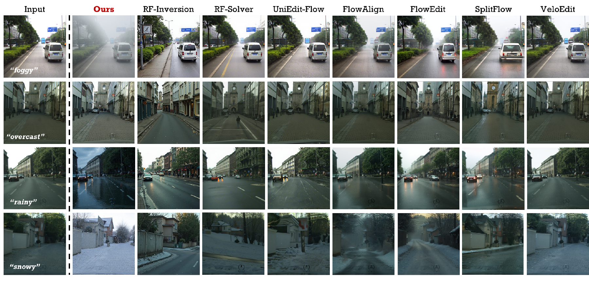
在雾和阴天中，WeatherFlow 主要协调能见度、照明与远景对比度；在雨和雪中，还会产生湿路反射、屋顶、植被和车辆积雪等局部材质响应。论文同时保留植被未变化、植被被天空替换、树高变化和道路边界漂移等困难案例，并明确将其视为失败。
7. 分天气鲁棒性与用户偏好
- WeatherFlow 的 EditScore Overall 在沙尘、阴天和风暴条件下高于逐天气最优基线包络，但在雾、雨和雪上低于该包络。
- EditReward 偏好率在沙尘、雾、阴天、雪和风暴五类上更高，仅雨天低于逐天气最优基线；其中雪天达到 86.73%。需要注意，“逐天气最优基线”每列可能来自不同方法，并不代表一个统一系统。
- 盲测用户研究覆盖 21 个案例、54 名参与者，共 1,134 次选择。八路对比面板包含七种 Flow 编辑基线，WeatherFlow 获得 60.4% 的全部选择，并在雾、雪、雨、沙尘四类中都排名第一。该面板没有包含 FLUX.1 Kontext、FusionEdit、WeatherEdit 或 IntrinsicWeather，因此不能用这项人类实验声称胜过主表中的所有方法。
表 6：八路盲测用户偏好分布
| 方法 | 雾 | 雪 | 雨 | 沙尘 | 总体 |
|---|---|---|---|---|---|
| FlowAlign | 13.3% | 8.6% | 26.9% | 19.1% | 16.7% |
| FlowEdit | 7.4% | 3.7% | 5.6% | 5.6% | 5.6% |
| RF-Inversion | 1.5% | 4.9% | 3.4% | 0.0% | 2.8% |
| RF-Solver | 2.2% | 3.4% | 2.8% | 0.6% | 2.5% |
| SplitFlow | 1.9% | 3.4% | 11.7% | 6.8% | 5.8% |
| UniEdit-Flow | 0.3% | 4.6% | 6.2% | 0.0% | 3.2% |
| VeloEdit | 1.2% | 0.9% | 0.3% | 16.7% | 3.1% |
| WeatherFlow | 72.2% | 70.4% | 43.2% | 51.2% | 60.4% |
8. 天气之外的探索性泛化
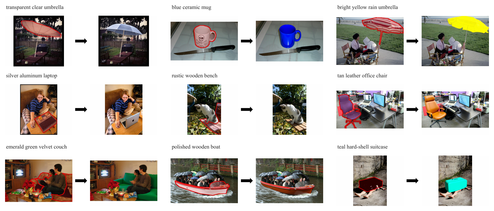
在 COCO 上，WeatherFlow 可以将颜色、材质或局部外观变化集中于红色轮廓标出的目标，并大体保持周围人物、物体和场景结构。
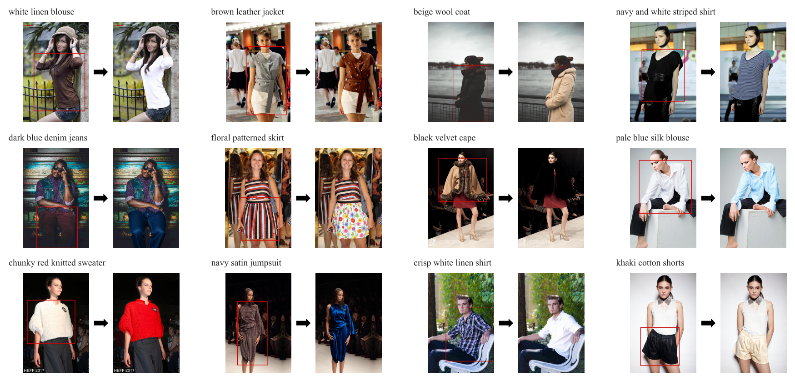
在 Fashionpedia 上，模型能够修改上衣、外套、裙子、裤子等服装的类别、颜色或材质，同时大体保持身份、姿态、身体结构和背景。这些仅是局部—全局协调的压力测试，不构成通用编辑基准上的排名结论。
局限
- SSVC 是与观测伪影一致的诊断抽象，现有实验尚不能证明它是所有失败的唯一原因；更强的因果验证需要独立标注的高/低冲突对照。
- 方法依赖自动提示词库的类别覆盖和措辞质量。缺失或含糊的响应可能让区域不变化，过宽的描述可能激活多余区域。
- 内容漂移仍未完全消除，包括植被被天空替换、树木变高、道路或建筑边界移动、同类实例支持区域合并，以及相关区域保持不变。
- 默认设置相对纯全局编辑增加约 43% 的采样开销；单图零样本系统也无法替代具备额外训练与场景表示的天气专用视频或 3D/4D 方法在物理渲染和时序一致性上的优势。
项目贡献总结
- 定义 Rectified-Flow 天气编辑中的语义—风格速度冲突 SSVC。
- 提出无需人工掩码或外部分割器的 Conflict Region Tracing，联合注意力差与速度冲突定位干预区域。
- 提出 SSVP，以 Anchor 校正局部隐状态、以 Reconcile 校正真正推进主轨迹的速度。
- 通过时间受控实验验证冲突校正主要在采样前 25% 有效，并在 EditScore、EditReward 与盲测用户研究中取得领先结果。
完整论文
WeatherFlow: Resolving Semantic-Style Velocity Conflict via Fluid-Inspired Velocity Projection
Chi Zhang, Yuchen Li, Zhiwen Hu, Meng Yuan, Gang Hua
为避免部分浏览器无法加载内嵌 PDF，下面同时提供完整 11 页的逐页阅读版本。原始 PDF 仍可通过上方按钮打开或下载。
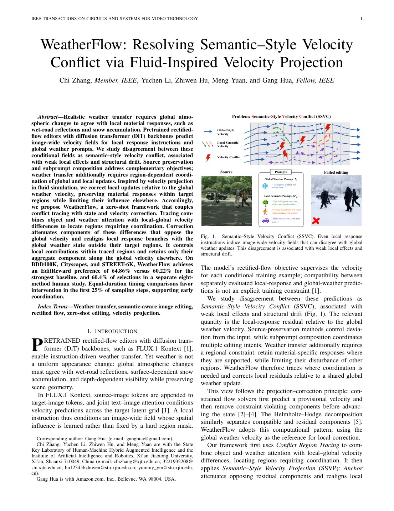
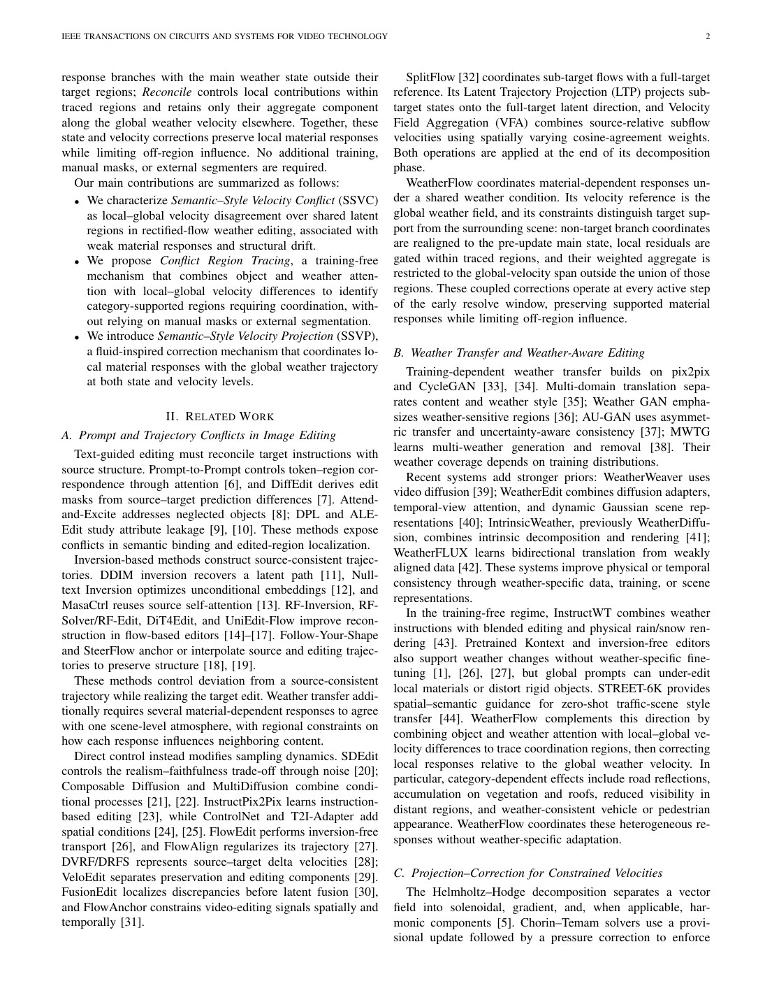
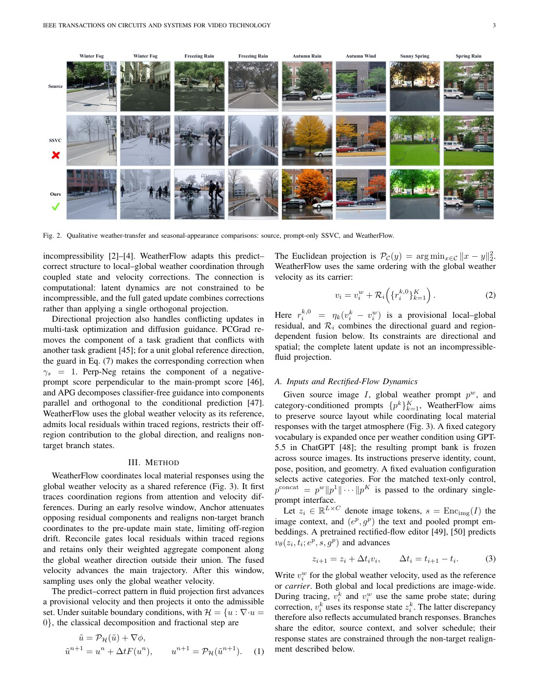
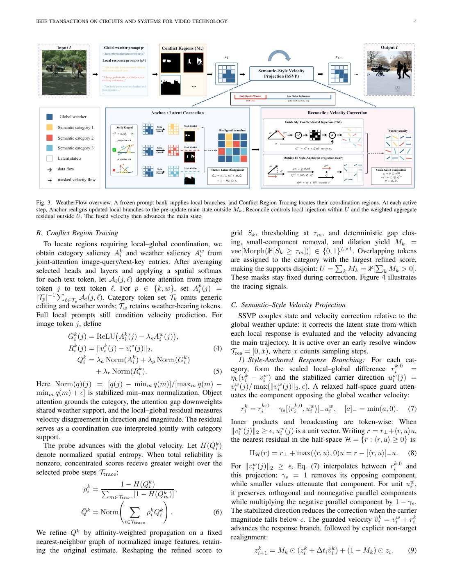
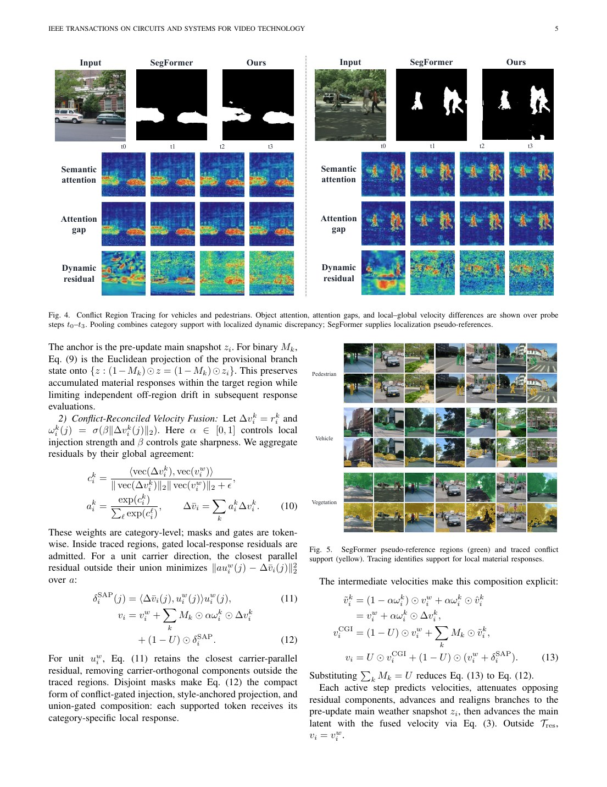
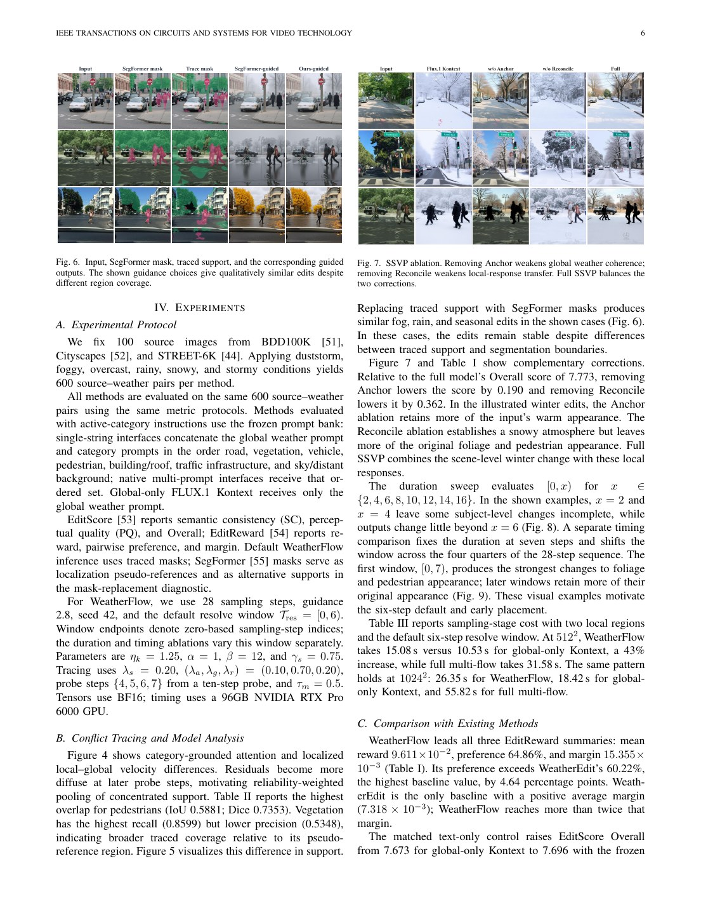
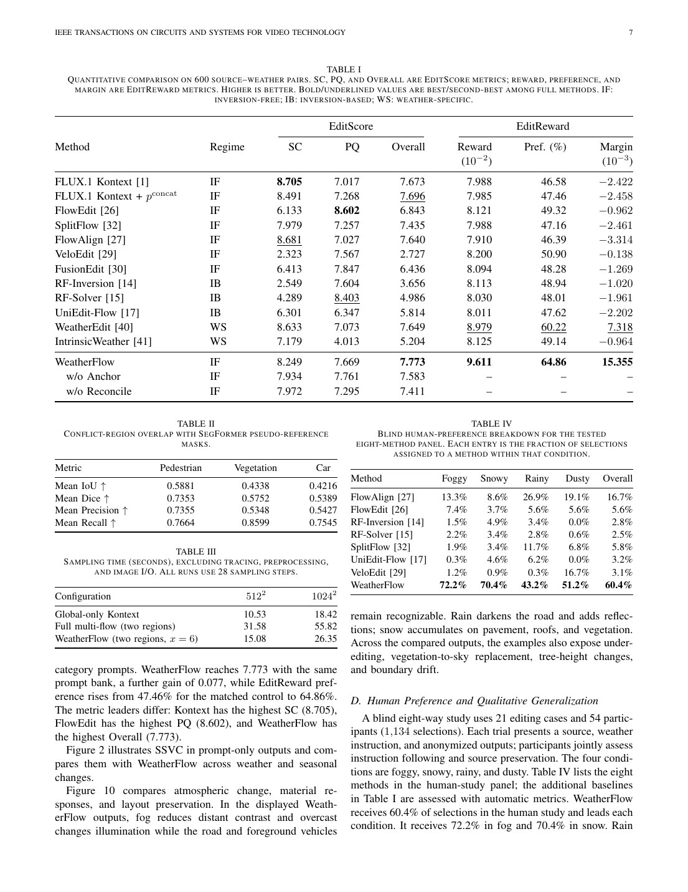
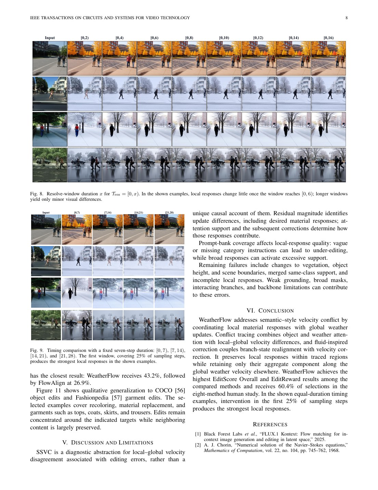
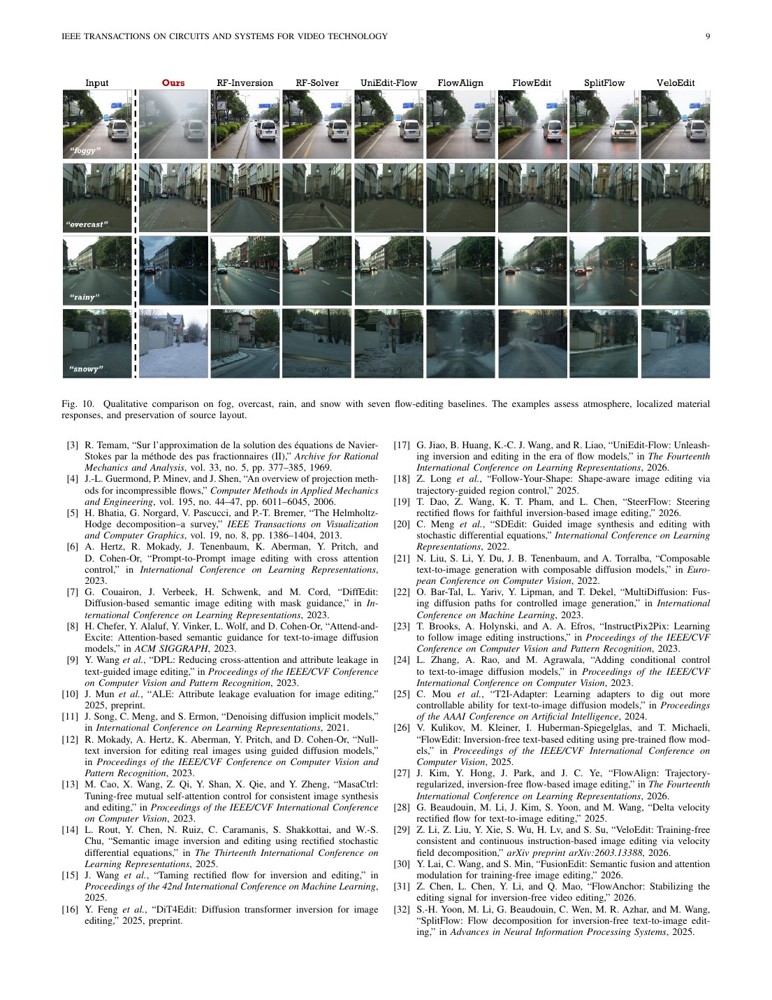
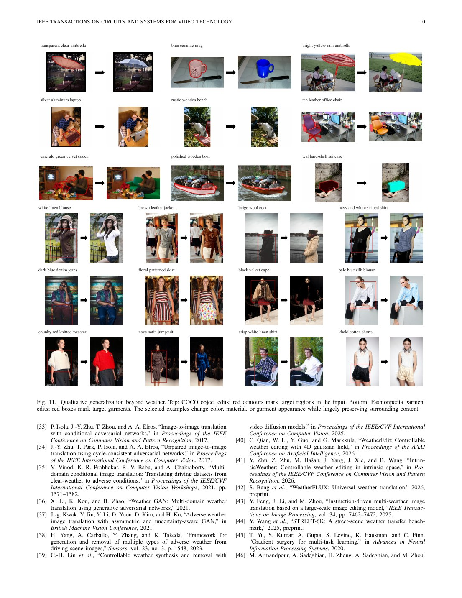